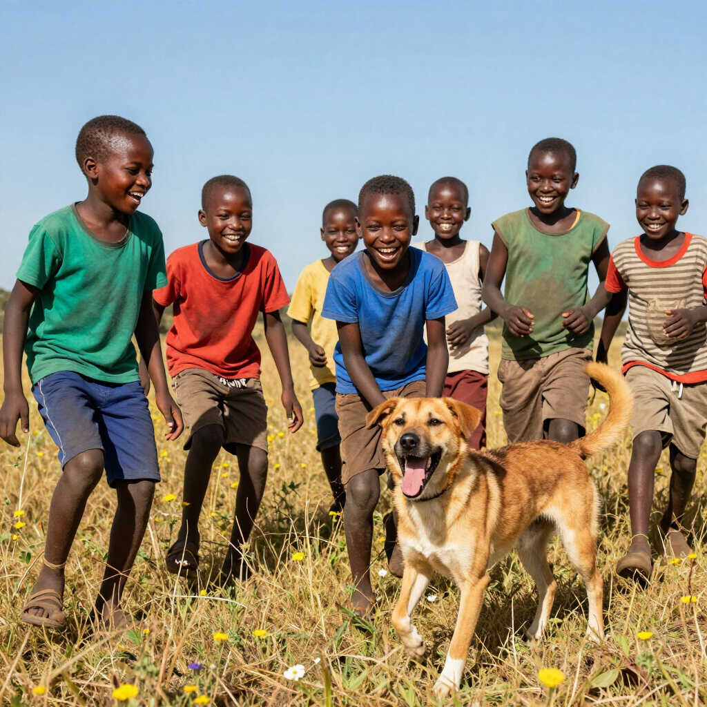

Contact Us
We foster a welcoming community and would love to hear from you. Whether you are looking to volunteer, establish a partnership, or have an urgent rabies-related query, please reach out. While our central hub is located in Upper Hill, our health clinics and community education programs run actively across multiple communities throughout Kenya. Our clinics and programs run across multiple communities in Kenya, bringing vital welfare services directly to those in need.